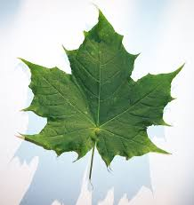

<!doctype html>
<html lang="en">
  <head>
    <meta charset="utf-8">
    <meta name="viewport" content="width=device-width, initial-scale=1">
    <title>Verifica bootstrap</title>
    <link href="https://cdn.jsdelivr.net/npm/bootstrap@5.3.3/dist/css/bootstrap.min.css" rel="stylesheet" integrity="sha384-QWTKZyjpPEjISv5WaRU9OFeRpok6YctnYmDr5pNlyT2bRjXh0JMhjY6hW+ALEwIH" crossorigin="anonymous">
  </head>
  <body>
  
    <script src="https://cdn.jsdelivr.net/npm/bootstrap@5.3.3/dist/js/bootstrap.bundle.min.js" integrity="sha384-YvpcrYf0tY3lHB60NNkmXc5s9fDVZLESaAA55NDzOxhy9GkcIdslK1eN7N6jIeHz" crossorigin="anonymous"></script>
  </body>
</html>
<nav class="navbar" style="background-color: yellow;">
  <div class="container-fluid">
    <a class="navbar-brand" href="#">
      
      Sito web Natura e Ambiente
    </a>
  </div>
</nav>
<h1>Natura: biodiversità, flora, fauna e salvaguardia</h1>
<p>Che cosa significa natura? Quello di natura è un concetto molto ampio. In effetti nella sua accezione più generale include l’universo intero, 
  considerato nella totalità dei fenomeni e delle forze che in esso si manifestano, compresi i fenomeni fisici e quelli che coinvolgono la vita. 
  Coinvolge i concetti di biodiversità, ecologia, ambiente, tutela della fauna e della flora minacciate.
  In questa utile guida approfondiamo il concetto di natura e le tematiche ad esso connesse e come salvaguardare la natura.
  Il Giornale dell’Ambiente, l’Osservatorio nazionale Amianto e il suo Presidente, l’Avv. 
  Ezio Bonanni si occupano da decenni della tutela ambientale e della lotta all’amianto e altri cancerogeni.
  La tutela della salute infatti non può prescindere dalla salvaguardia della natura e dell’ambiente.
  Ormai è innegabile infatti il legame tra inquinamento e l’aumento di malattie croniche respiratorie e neoplastiche.</p>
<div class="text-bg-success p-3">Che cosa significa natura? Quello di natura è un concetto molto ampio. In effetti nella sua accezione più generale include l’universo intero, 
  considerato nella totalità dei fenomeni e delle forze che in esso si manifestano, compresi i fenomeni fisici e quelli che coinvolgono la vita. 
  Coinvolge i concetti di biodiversità, ecologia, ambiente, tutela della fauna e della flora minacciate.
  In questa utile guida approfondiamo il concetto di natura e le tematiche ad esso connesse e come salvaguardare la natura.
  Il Giornale dell’Ambiente, l’Osservatorio nazionale Amianto e il suo Presidente, l’Avv. 
  Ezio Bonanni si occupano da decenni della tutela ambientale e della lotta all’amianto e altri cancerogeni.
  La tutela della salute infatti non può prescindere dalla salvaguardia della natura e dell’ambiente.
  Ormai è innegabile infatti il legame tra inquinamento e l’aumento di malattie croniche respiratorie e neoplastiche.</div>
